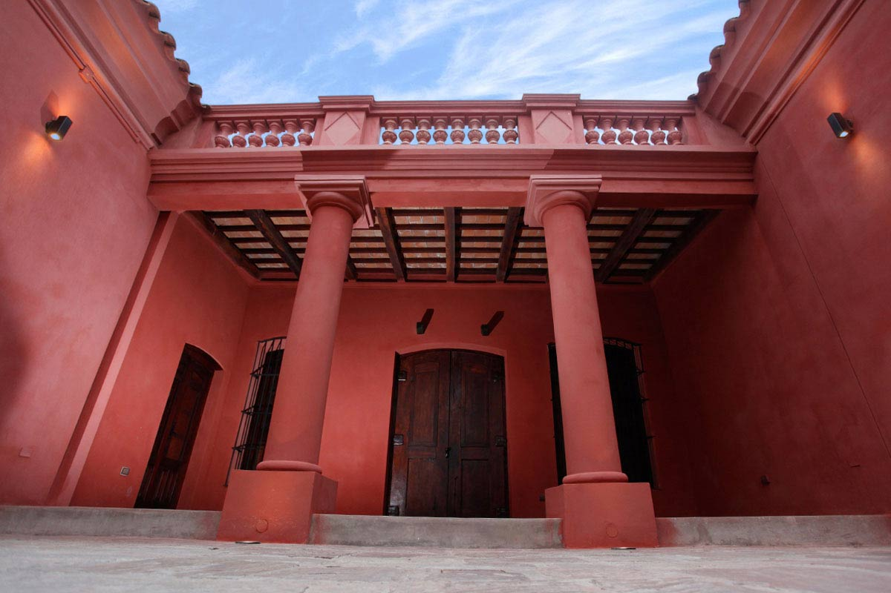
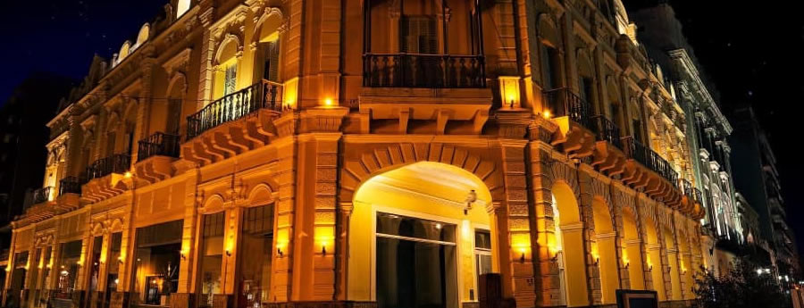
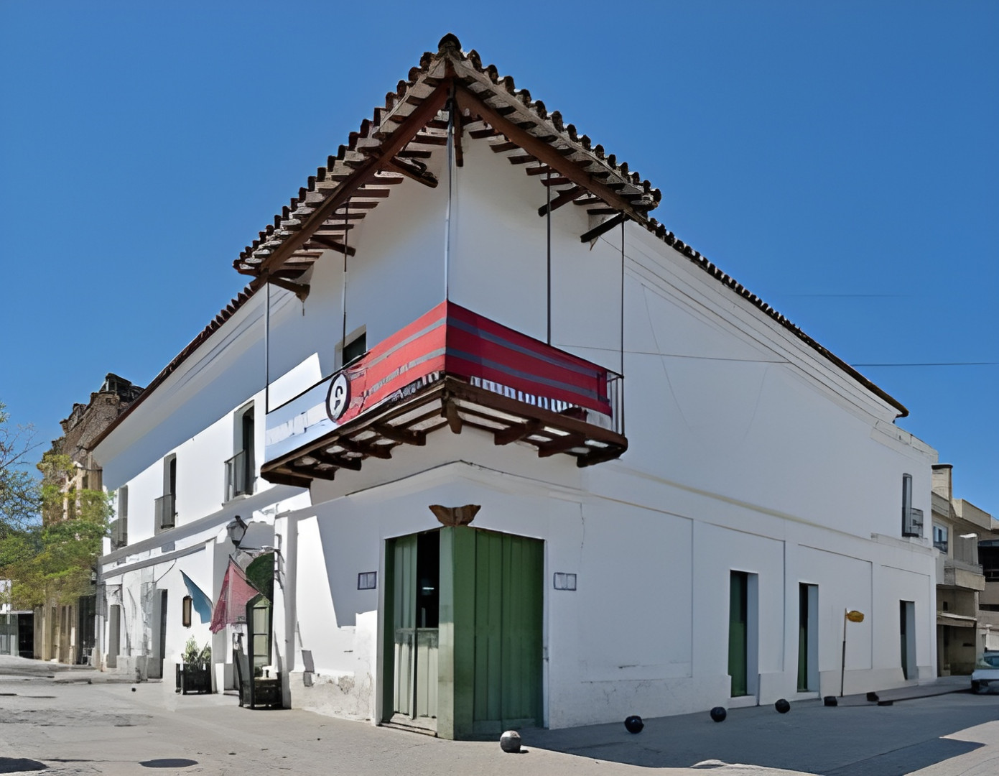
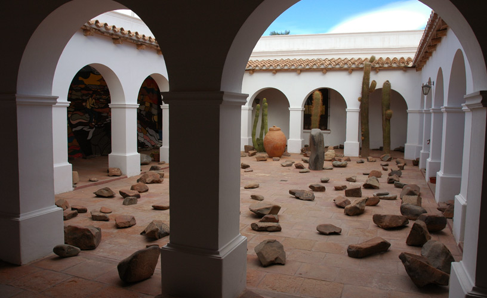

Museos
Salta es una provincia rica en cultura, y sus museos son una ventana a su pasado y su presente.
Principal
Contacto

Museo Güemes

Museo de Arte
Contemporáneo (MAC Salta)

Museo de la Ciudad
"Casa de Hernández"

Museo
Arqueológico de Cachi